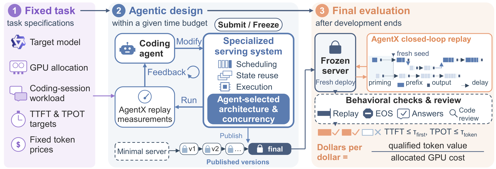
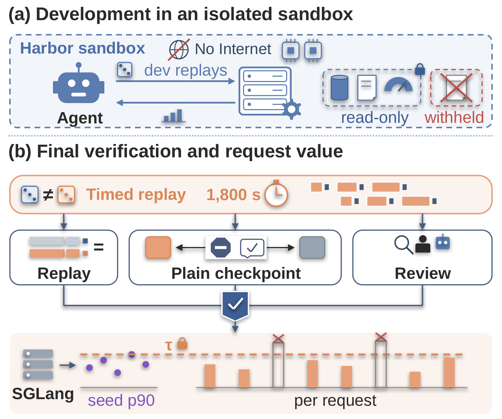
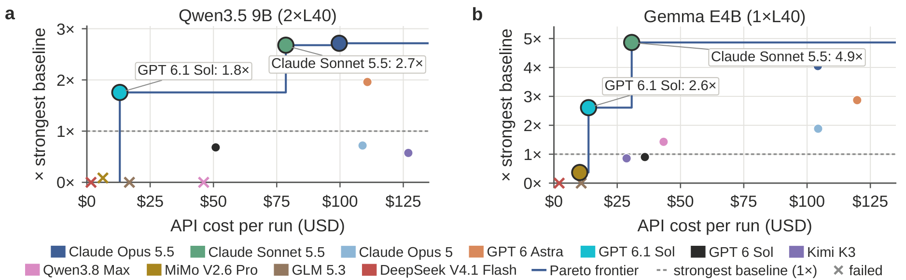
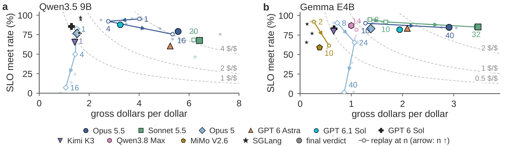
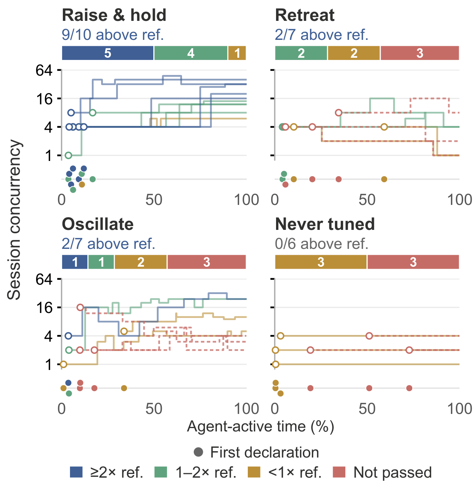
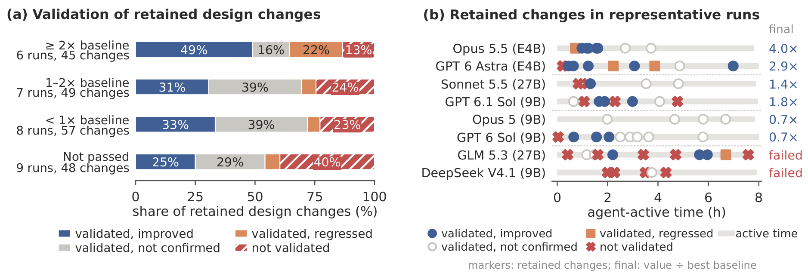
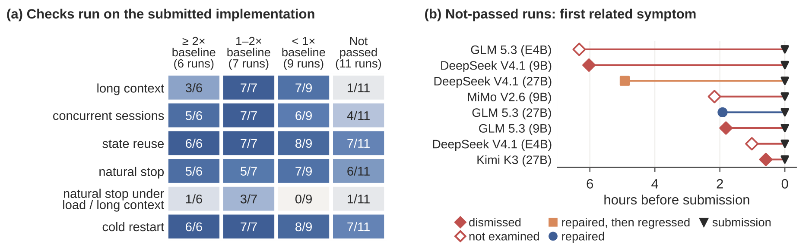

Main results
Latency-qualified dollars per dollar (higher is better) for 11 coding agents on three deployments, against the best of SGLang and vLLM on the same hardware. A system scores only if it passes verification.
| System | Gemma E4B | Qwen3.5 9B | Qwen3.8 27B INT4 |
|---|---|---|---|
| $/$ @ concurrency | $/$ @ concurrency | $/$ @ concurrency | |
| Best baseline | vLLM 0.61 @8 | SGLang 1.62 @1 | vLLM 1.47 @1 |
| Claude Opus 5.5 | 2.47 @40 | 4.40 @16 | 2.64 @8 |
| Claude Sonnet 5.5 | 2.97 @32 | 4.34 @20 | 2.01 @12 |
| GPT 6 Astra | 1.75 @32 | 3.18 @12 | 1.48 @4 |
| GPT 6.1 Sol | 1.59 @24 | 2.84 @4 | 0.98 @4 |
| Claude Opus 5 | 1.15 @24 | 1.16 @1 | 0.62 @6 |
| GPT 6 Sol | 0.55 @5 | 1.11 @1 | 0.26 @2 |
| Kimi K3 | 0.52 @6 | 0.93 @1 | Not passed |
| Qwen3.8-Max-0902 | 0.87 @14 | Not passed | Not passed |
| MiMo V2.6 Pro | 0.22 @10 | Not passed | Not passed |
| GLM 5.3 | Not passed | Not passed | Not passed |
| DeepSeek V4.1 Flash | Not passed | Not passed | Not passed |
Latency-qualified dollars per dollar with offered session concurrency. Highlighted: largest agent value per deployment.
ServerBench asks coding agents to build a complete LLM serving system for a fixed model, GPU allocation, and workload, and to decide how much workload it serves. Systems are replayed against real coding-agent sessions, scored in dollars per dollar (latency-qualified token value per dollar of GPU cost), and only count if they pass independent verification. The best agents beat SGLang and vLLM by up to 4.87×, but delivery is uneven: a third of runs submit a system that fails verification.
Coding agents now write and debug software through long loops of experimentation. Those loops run on LLM serving systems. So a natural question is whether agents can design the very systems that serve them, and serve them well.
Serving is a hard target. A service provider needs correct model execution, responses within latency targets, and as much useful work as possible from every GPU dollar. Getting there means coordinating implementation decisions (scheduling, KV-cache management, batching, kernels, speculation) with operating decisions (how much load to accept) under the dependencies of a real workload. We built ServerBench to measure exactly that.

Why a new benchmark?
Agent-driven systems optimization is moving fast, but existing benchmarks evaluate individual kernels, code patches, or servers under preset test conditions. That leaves three gaps when the goal is a complete serving system.
Oversimplified workloads
Independent requests with uniform lengths and fixed batches let a static batch serve nearly as well as a production engine, so continuous batching and paged attention bring little benefit. Real coding agents mix short and long requests, grow a shared context over many turns, and fan out into parallel subagents.
ServerBench: replay real coding-agent trajectories.
Speedup-only objectives
Speedup and throughput ignore latency requirements and GPU cost, and fix the offered load. A real provider must decide how much workload to serve while keeping TTFT and TPOT within targets.
ServerBench: score in dollars per dollar.
Correctness-only validation
Checking outputs against a reference misses tail latency and full execution. Speculation, state reuse, and custom scheduling add execution paths that short or isolated tests rarely exercise.
ServerBench: verify latency, fidelity, and complete execution.
ServerBench in three designs
Each task fixes a model checkpoint, a GPU allocation, a coding-session workload, and service requirements. Starting from a minimal Transformers server, an agent gets an 8-hour development budget in an Internet-disabled sandbox. It may redesign execution, batching, memory management, scheduling, and state reuse, as long as it preserves the checkpoint, precision, and inference semantics. Its submission is an implementation plus a session concurrency.
1. Workload: real coding-agent trajectories
Using the AgentX harness, ServerBench replays recorded coding-agent sessions with their request lengths, multi-turn structure, shared prefixes, parallel subagent branches, and inter-turn delays. Prompt and tool contents are reconstructed for privacy while keeping lengths, prefixes, and session topology. Replay is closed-loop: each turn waits on the response it depends on, so serving latency directly governs how much work completes in the measurement window. Shared context rewards reuse, while retained state and new sessions compete for memory and compute.
2. Objective: dollars per dollar
We price each completed request's input and output tokens at fixed API rates, count only requests that meet both the TTFT and TPOT targets, and divide by the GPU cost of the measurement window:
Here if request meets both latency targets, is the number of GPUs, the price per GPU-hour, and the window in seconds. For example, USD 3.65 of qualified token value over USD 0.83 of GPU cost scores 4.40. The objective rewards capacity improvements together with a matching load choice: serving more workload raises value only while requests still meet their latency targets.
3. Validation: beyond correctness
Latency targets are the p90 TTFT and TPOT of an SGLang reference running its model-specific cookbook configuration, frozen before development. After development, the submission is rebuilt in a fresh deployment and replayed for 1,800 seconds on held-out seeds that no development run could draw. Independent checks verify complete prompts, prescribed output lengths, streaming consistency, generation fidelity to the checkpoint, natural EOS stopping, and held-out answer accuracy. A post-run review then inspects code and recorded actions for prohibited shortcuts. Only verified systems receive a score.

Results
We evaluate 11 coding-agent models at maximum reasoning effort on three deployments: Gemma E4B (1×L40), Qwen3.5 9B (2×L40), and Qwen3.8 27B INT4 (2×L40). GPT models run in Codex and the others in Claude Code. Baselines are SGLang v0.5.19 and vLLM v0.28.0 at their best operating points on the same hardware.
As the table at the top shows, agents can design verified serving systems that beat the strongest reference on every deployment. Claude Opus 5.5 leads Qwen3.5 9B and Qwen3.8 27B INT4 with 4.40 and 2.64 dollars per dollar (2.71× SGLang and 1.80× vLLM). Claude Sonnet 5.5 reaches 2.97 on Gemma E4B, 4.87× the vLLM reference.
Performance is uneven. Of 33 runs, 22 yield verified systems and 13 beat the strongest reference. Six models deliver verified systems on all three deployments, but only three beat the reference on all three. Gross value alone is not enough either: on Qwen3.5 9B, Sonnet 5.5 produces more gross value than Opus 5.5 (6.42 vs. 5.56), but a smaller share meets the latency targets, so it scores 4.34 against 4.40.


What separates strong agents
We analyze the development trajectories of 30 runs with full server execution records, and back up each pattern with controlled comparisons on frozen systems and common seeds.
High-value designs coordinate capacity and concurrency.
At fixed GPU cost, more sessions can raise token value, but they also raise TTFT and TPOT through queueing and contention. Strong agents build capacity first and then raise load to match it. Among runs reaching at least 2× the strongest reference, 7 of 17 load decisions improve value on the next measurement, against 2 of 23 for verified runs below the reference. Those runs also reach a usable end-to-end replay sooner, in a median of 0.90 hours versus 2.96.
Sonnet 5.5 on Gemma holds four sessions while it revises the engine, then raises load together with further implementation changes. Its frozen system goes from 1.30 at two sessions to 2.97 at 32. It also knows when to stop: 36 sessions produce more gross value but more TPOT misses, so it submits 32. Weaker runs often move the other way, lowering concurrency to one to relieve contention instead of building capacity.

Interpreting feedback in workload context guides optimization.
Useful feedback requires testing a change under the conditions that matter. Among runs reaching at least 2× the reference, 49% of retained design decisions follow improvements on workload-relevant tests, against 25% in failed runs.
Prompt-lookup speculation on Gemma shows how much this matters. Opus 5 tests it on a synthetic random-text probe, sees no benefit, and drops it. Opus 5.5 gets the same null result, but checks it against 60 real replies from replay, fixes its simulator, measures 2.09–2.34 accepted tokens per step, and adopts speculation. When we resume Opus 5 from the same checkpoint with and without feedback from its own replay replies, only the arm with workload feedback re-adopts speculation, and its server delivers 1.13–1.31× the qualified value.
Favorable feedback can mislead too. One Opus 5.5 run on Qwen3.8 27B INT4 raises its development score from 2.20 to 2.99 and validates that configuration on an unusually light development draw, but its qualified share drops from 76.0% to 16.8% in the final replay. A CPU scan of the workload generator over 128 seeds, taking just 7.71 seconds, would have shown that the draw sat near the fourth percentile.

Verification must match the deployed workload.
Changes to admission, scheduling, and state reuse create request boundaries and state transitions that need their own checks. At submission time only 5 of 33 entries have recorded checks of natural stopping on the submitted system under load or long context, and related symptoms appear before submission in 8 of the 11 runs that fail verification.
- Admission boundaries. Qwen3.8-Max-0902 tightens admission to protect TPOT and checks only a short prompt. Its policy leaves a range of prompt lengths that can never enter execution, and final evaluation stalls on a 315K-token input.
- Shared state. Kimi K3 retests an isolated long prompt on a fresh engine, but its prefix cache crashes when the same prefix is inserted a second time, and the crash recurs in final evaluation.
- Doing it right. After adding preemption and cache restoration, Opus 5.5 on Gemma shrinks cache capacity to force those paths to run. The stress test exposes invalid outputs from uninitialized cache storage. The agent repairs it and reruns forced preemption against isolated execution. With the repair reverted, a reduced-pool replication passes 0 of 3 tests; with it, 3 of 3.

Takeaways
Coding agents can already design LLM serving systems that substantially beat production frameworks on a realistic workload, but reliable delivery is far from solved. Across trajectories and controlled comparisons, three priorities stand out:
- coordinate capacity improvements with the operating load;
- design experiments around workload characteristics and variation;
- verify the execution paths that system changes introduce, and rerun those checks after every repair.
ServerBench, including the harness, tasks, baselines, and evaluation, is open source. Try it with your own agent at github.com/Infini-AI-Lab/Server-Bench. The full paper is on arXiv (2611.06841).